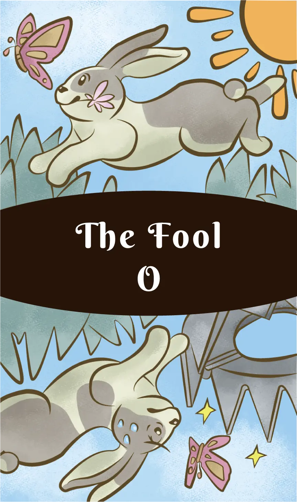

牌義概述
愚者代表新的開始、冒險、自發性、純真和自由。這張牌是大阿爾卡納的第一張牌，編號為0，象徵著一切可能性的起點。
正位牌義
新的開始、冒險、自由、純真、自發性、信任、樂觀、無憂無慮、潛力、開放的心態、冒險精神、創新思維。
愚者正位時，暗示著你正站在新旅程的起點，充滿無限可能。這是一個鼓勵你跟隨直覺、勇敢前行的信號，即使前方的道路尚不明確。
逆位牌義
魯莽、不負責任、冒險、不成熟、猶豫不決、恐懼冒險、過度謹慎、錯失機會、愚蠢的決定、缺乏方向。
愚者逆位時，可能表示你在做決定時過於衝動或相反地過於猶豫。這可能是一個警告，提醒你需要更加謹慎，或者需要克服恐懼，不要錯過重要的機會。
象徵意義
愚者牌通常描繪一個年輕人站在懸崖邊，準備踏出一步。他背著一個小包袱，代表他攜帶的少量經驗和物質財富。他的目光望向天空，象徵著對未來的憧憬和對未知的信任。
他腳邊常有一隻小狗，象徵著本能和忠誠。懸崖代表著未知和風險，而愚者卻毫不畏懼，象徵著純真和對生活的信任。
解讀建議
當愚者出現在牌陣中時，它可能暗示著：
- 你正處於人生的新階段或新開始
- 這是嘗試新事物、冒險的好時機
- 保持開放的心態和樂觀的態度
- 信任你的直覺和內在指引
- 不要被恐懼或過去的經驗所限制
思考這些主題如何與你當前的處境相關，以及你如何能夠擁抱愚者的精神，勇敢地踏上新的旅程。
關聯與連結
元素
風
星座
天王星
數字
0 - 無限可能、循環、起點